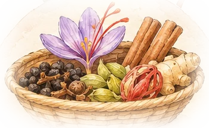

De Marco Polo a la primera volta al món
El comerç de les espècies
Per què unes llavors tan petites van moure vaixells, diners i imperis?
2 diesde feina per comprar una lliura de pebre a Londres, el 1438
i avui?
uns minutsde feina per comprar un pot al súper
El teu viatgeEncara no has començat cap capítol.
Es guarda només en aquest navegador.

Nou capítols, una gran pregunta
Cada capítol respon una pregunta petita amb una infografia, mapes i activitats. Al final, al repte, respondràs la gran pregunta amb els teus arguments.
Com funciona aquesta web
En 30 segons
Cada capítol comença amb un resum. Activa Lectura fàcil (a dalt) si vols una versió més senzilla.
Infografies
Toca-les per veure-les grans. Les trobaràs totes juntes a Glossari i fonts.
Experimenta
Calculadores, mapes amb vents, un joc de mercaders i fitxes que giren: toca-ho tot!
Posa-t’hi
Preguntes amb correcció immediata. Les paraules tenen definició.
Cronologia ràpida
1271-1295Viatges de Marco Polo
1328-1349Ibn Battuta navega per l’Índic
1330-1430Barcelona, port de les espècies
1438Pebre a Londres: 2 dies de sou
1488Dias passa el cap de Bona Esperança
1492Colom arriba a Amèrica
1498Gama arriba a Calicut
1519-1522Primera volta al món
1529Tractat de Saragossa
1621Els holandesos conquereixen Banda
1770Poivre trasplanta clau i nou moscada
AvuiEl Vietnam, primer productor de pebre